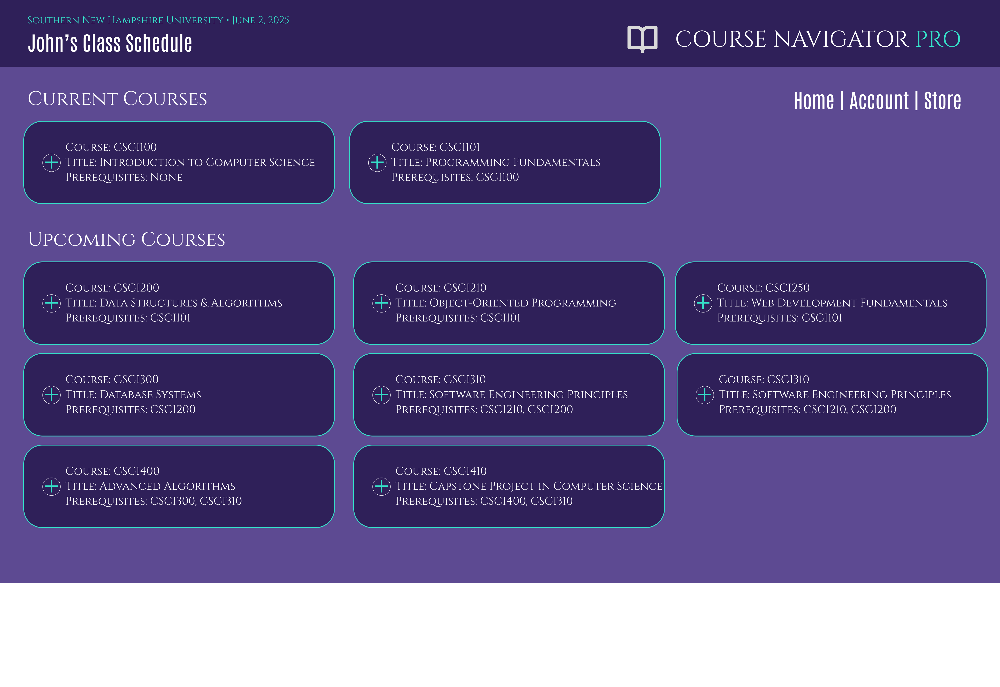
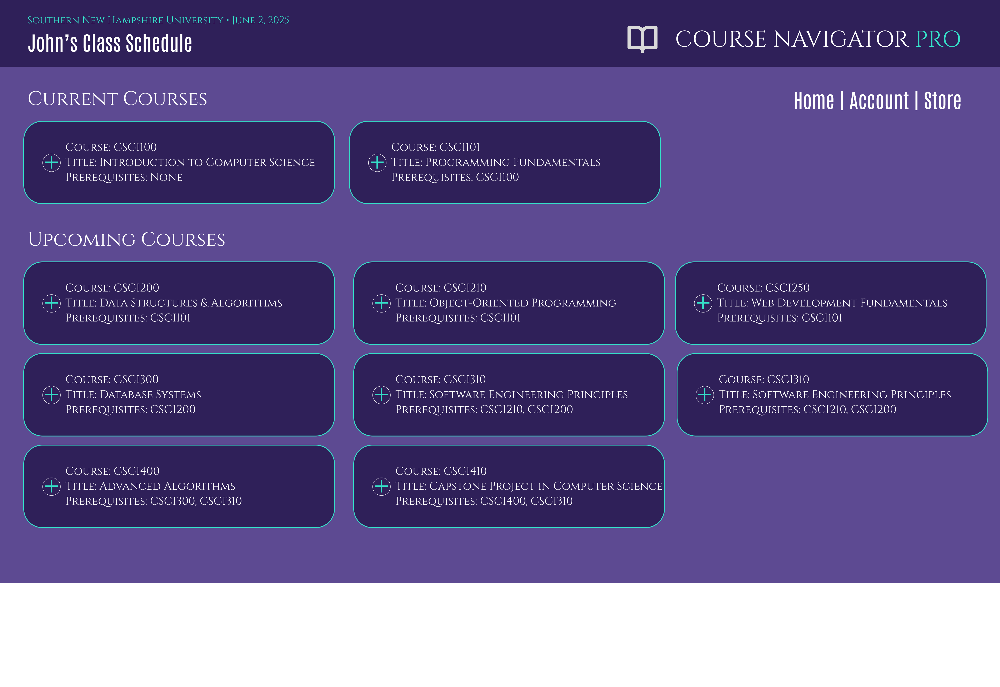

Course Navigator Pro Artifact
Academic Advising Console Application
Code Review
This walkthrough highlights the C++ logic, data validation layers, and how external testing methods were used to identify vulnerabilities. Runtime analysis and enhancements for BST tree balancing and error handling are also explained.
Course Navigator Pro Code Review
Original Artifact
This artifact began as a course requirement at ABC University. The original application was built in C++ and designed to read a CSV of course data, organize it using a simple Binary Search Tree (BST), and allow users to view courses in sorted order or fetch prerequisites.
While the core concept demonstrated an understanding of BST logic, the app lacked scalability, edge case handling, and modern data persistence. It also assumed perfectly formatted input files, which significantly limited its real-world application and introduced vulnerability to malformed data.
Critically, the original version did not utilize a database—meaning all course data had to be reloaded each session, and no user-specific or dynamic data could be saved or retrieved. For a system like Course Navigator Pro, which is intended to support academic advising workflows, this was a major limitation. Persistent storage through a database is essential to enable course tracking, real-time updates, historical data access, and user synchronization across sessions and devices.
To address this, MongoDB was selected as the backend solution during the enhancement phase. Its NoSQL, document-based structure provided the flexibility needed to manage varying course and prerequisite data while enabling scalable storage, fast retrieval, and smooth integration with a modern Java-based application. This shift laid the foundation for a more robust, full-stack advising tool ready for future cloud deployment.
Original Console App in C++ w/ BST Sorting
Enhancement
The Course Navigator Pro application began as a C++ console program utilizing a basic Binary Search Tree (BST) for storing and retrieving course information. While functional, this approach lacked balance and scalability, leading to inefficiencies during search operations as data volumes grew. To improve performance, the codebase was migrated to Java, enabling better modularization and compatibility with modern development tools and frameworks.
A key enhancement involved replacing the unbalanced BST with a self-balancing AVL Tree. This change significantly improved search, insertion, and deletion operations by maintaining logarithmic time complexity, even as the course dataset expanded. The AVL implementation ensured that the application could handle a larger and more dynamic set of courses without sacrificing performance.
Additionally, MongoDB was integrated as the application's NoSQL backend. Unlike traditional relational databases, MongoDB allows for flexible schema design, making it ideal for storing course records that may vary in structure or expand over time. Its document-based model simplified data retrieval and allowed the application to evolve quickly without complex migrations.
These enhancements not only addressed performance and scalability concerns but also modernized the application's architecture. With Java's object-oriented design, AVL's efficiency, and MongoDB's scalability, Course Navigator Pro is now positioned for full-stack expansion, cloud deployment, and future integration of features such as role-based access control, advisor authentication, and real-time data analytics.

AVL Tree & MongoDB Integration
Checkpoint Summary
| Milestones | Enhancement Category | Original Issue | Changes Made | Outcome Demonstrated |
|---|---|---|---|---|
| Milestone 1 | Algorithms & Data Structures | v1.0 | Initial implementation in C++ using basic Binary Search Tree logic | Converted core logic from C++ to Java and restructured codebase for maintainability | Language Migration, Object-Oriented Design, Refactoring |
| Milestone 2 | Algorithms & Data Structures | v1.1 | Unbalanced Binary Search Tree causing inefficient search operations | Implemented AVL Tree for self-balancing and optimized retrieval of course data | Advanced Data Structures, Search Optimization, Algorithm Efficiency |
| Milestone 3 | Databases | v1.2 | No backend database integration; data persistence was missing | Configured MongoDB and started linking course records to backend schema | NoSQL Integration, Backend Architecture, Data Modeling |
| Milestone 4 | Databases | v1.3 | Lack of cloud-based storage and user-course synchronization | Fully integrated MongoDB with Java codebase and implemented dynamic course syncing | Database Synchronization, Full-Stack Integration, Cloud Readiness |
Technical Reflection
Throughout the development of Course Navigator Pro, I migrated the original C++ codebase to Java to improve maintainability and apply object-oriented design principles. To enhance performance, I replaced the basic Binary Search Tree with a self-balancing AVL Tree, optimizing search efficiency and data retrieval.
For backend data persistence, I integrated MongoDB and configured it to synchronize course records dynamically. This integration allowed for scalable, cloud-ready data management, supporting seamless updates and real-time syncing.
Security was a key consideration: I implemented secure RESTful API endpoints with strict input validation, following OWASP best practices. Modular asynchronous flows were designed to maximize responsiveness, and Firebase permissions were fine-tuned to ensure balanced functionality and user privacy.
Learning & Outcomes
- Collaboration: Managed code versions and coordinated workflows using GitHub.
- Communication: Produced narrated walkthroughs explaining key architectural decisions.
- Algorithms: Implemented AVL trees for balanced, efficient course data operations.
- Databases: Integrated MongoDB for NoSQL data persistence and synchronization.
- Security: Enforced secure endpoints with robust input validation and role-based access concepts.
- Tools: Utilized Android Studio, Firebase, MongoDB Compass, Express.js, and GitHub for full-stack development.
Future Enhancements
The next phase includes developing a comprehensive web-based interface connected via RESTful APIs. This UI will empower academic advisors to efficiently search courses, review prerequisites, and generate advising reports in real-time.
Additional planned features involve implementing authentication for advisors, enforcing role-based access controls, and deploying the application on cloud platforms like Firebase or AWS to ensure full scalability, availability, and security.
A reporting engine will be added to allow advisors to export reports (PDF/CSV) detailing student progress, prerequisite chains, and curriculum compliance. Integration with tools such as Google Drive or Microsoft 365 will offer centralized access to advising documents and schedules.
For larger institutions, multi-tenancy support will be introduced, enabling the system to serve multiple departments or campuses with isolated datasets and access privileges. This will include customizable branding, department-specific course schemas, and tenant-level analytics.
To enhance automation, the system will also feature:
- Auto-suggestion of courses based on completed prerequisites
- Visualization of prerequisite trees using D3.js or Chart.js
- Advisor chat integration powered by AI (e.g., OpenAI API)
- Scheduled data backups with encrypted storage
- Support for mobile-responsive design for advising on-the-go
These upgrades are designed to evolve Course Navigator Pro into a full-service, institution-grade advising system with intelligent insights, real-time responsiveness, and extensibility across a variety of academic use cases.
 

Roadmap: Fully Functional Mobile/Web Application